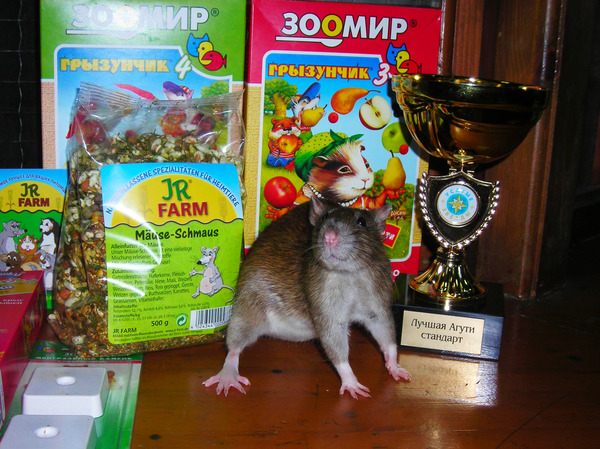
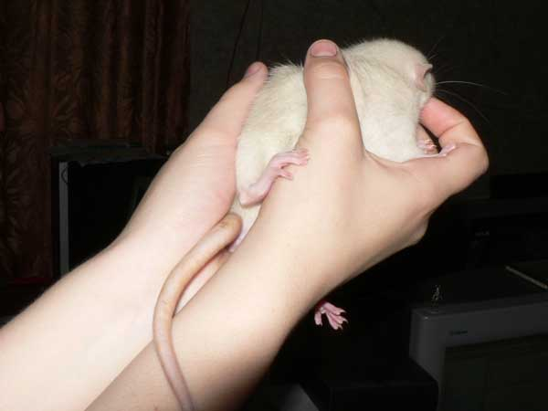
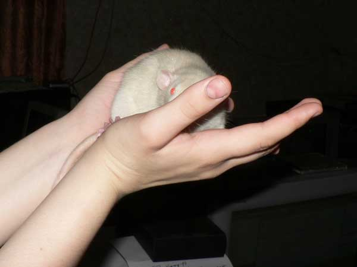
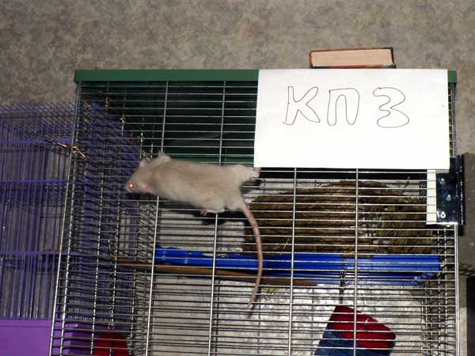
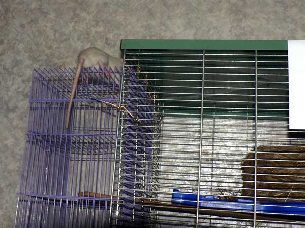
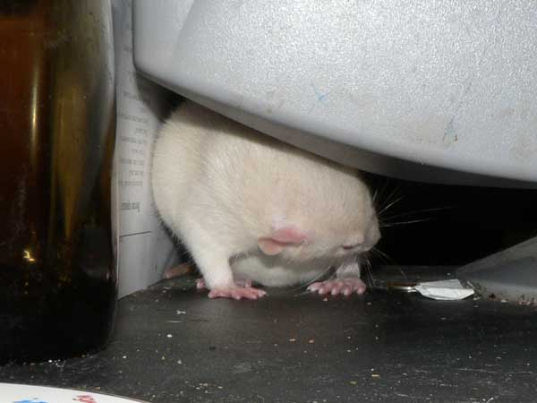
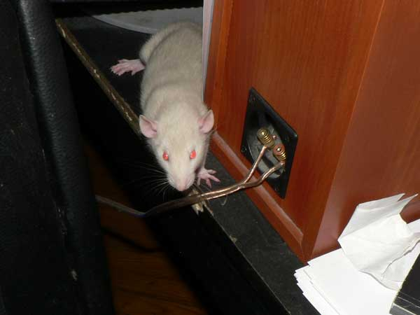
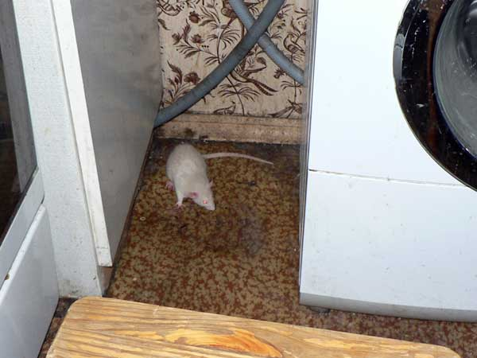

Июль 2009: Жоффруа Тори
У нас появился новенький — Жоффруа Тори из Домика Голубой Крысы.
Папа: Орк из ДГК, вес при вязке где-то порядка 640 грамм, может на пару грамм меньше. Возраст на момент вязки 1 г. 3 месяца. Амбер Селф Дамбо Стандарт Оценки на "Зверьке на ладошке" последнем 94,5 балла, на предпоследнем 96 баллов. Уже имеет детишек, литера "Х" из ДГК . Всего трое, но все уже получили юниорские титулы. Характер спокойный, этакая плюшевая игрушка. Ленивый, мягкий, тискательный, крайне ручной зверь, прям плюшевый мишка, несмотря на это в клетке доминант. То есть если младший обнаглеет, встанет, перевернет и вернется в гамак нежиться. Довольно ярко рыжий (оказался вторым на последнем "зверьке" в сравнении на спец приз "самое яркое солнышко"), со слегка голубоватым подшерстком. Владелец - Михайлов А. (KAMER)
Родственник Эрику, кстати говоря. Отец Эрика, Ян Майен, заводит детей еще и от другой крыски, кроме матери Эрика, и вот по этой линии.

Мама: Персеида из Крыскиного Теремка, вес на выставке "усатые звезды" был 314 гр. Сейчас больше. После родов 437 гр. Возраст на момент вязки 6 месяцев Айриш Агути Стандарт На выставке "Усатые Звезды" специальный приз "лучший агути стандарт". Характер активный. Смешная обаятельная непоседа с яркими глазками-бусинками Владелец- Шмелева А.(Hanna)
А это — родственница благородных донов (и, следовательно, Джонни и Джета). Только я запутался в степенях родства, так что не скажу точно.

А вот и сам Жоффруа Тори:

— Стесняюсь я…

— Ой?

— Не, побёг я отсюда…

— Ладно, сдаюсь, фотографируйте!

— Жорик осваивает вертикальное клетколазание.

…и горизонтальное.

Пошел на балкон. Сверху только почему-то.

Нагваль Никодим: — Мелкий! Ты где?

— Та-ак, это, значит, монитор вот на чем стоит…

— А тут у нас колонки…

— Ага, а сзади у колонки провода…

— Провода? Эх, провода…

Жорик на прогулке.

Аналогично. Как-то привыкли, что крысята во время первой прогулки удирают дня на три. Жорик же вернулся в клетке в тот же вечер — и сам из нее гулять не выходит. Ему некогда: он есть. Девять недель — а 400 грамм… Нажористый крыс.